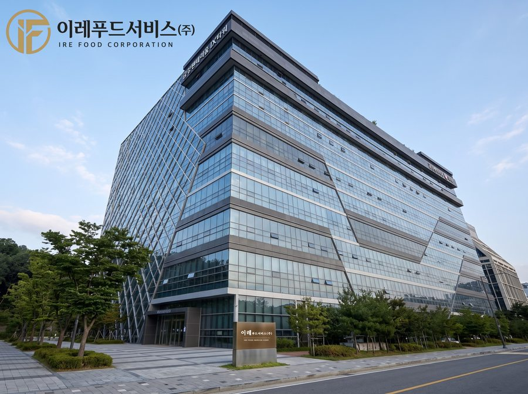

1998년 서울 강동구 천호동에서 이레유통으로 시작한 이레푸드서비스 주식회사는 30여년 간 신뢰를 최우선 가치로 삼아 식자재 유통업의 길을 걸어왔습니다.
중국식품, 마라탕·훠궈 식자재를 비롯해 한식·중식·분식·일식·양식까지 폭넓은 품목을 취급하며, 일반 음식점부터 대형 프랜차이즈, 단체급식까지 다양한 고객군에 안정적인 공급망을 제공하고 있습니다.
산지에서 셰프의 주방까지, 품질과 신선도를 지키는 절제된 신뢰감으로 다음 30년을 준비합니다.
10월 훠궈·마라탕 프랜차이즈 중국식품·신선식품 공급 업무협약
6월 숯불갈비 프랜차이즈 식자재 공급 업무협약
6월 '이레푸드서비스 주식회사'로 사명 변경 및 물류창고 확장 이전
11월 분식 프랜차이즈 식자재 공급 업무협약
11월 식자재 종합 쇼핑몰 '식봄' 입점
11월 중국 허베이성 소재 중국당면·분모자 생산 공장 국제무역부 담당자 미팅 및 중국 식품 직수입 협의
6월 유튜브·인스타그램 개설
5월 네이버 스마트스토어 입점
1월 한 식품 유통사와 중국식품·주류 수입 업무협약
3월 서울 강남구 대형 한식 식당 식자재 공급 업무협약
8월 자회사 (주)강한글로벌 설립 — 충청·전라권 식자재 및 주류 공급
3월 통신판매업 신고
6월 일식 프랜차이즈 식자재 공급 및 전용상품 물류 공급 업무협약
7월 물류창고 이전 — 경기도 하남시
5월 '이레글로벌'로 사명 변경
8월 서울 소재 보건소 구내식당 납품 협약
2월 종합식자재 도소매로 업무 확장
5월 이레유통 설립 — 서울시 강동구 천호동